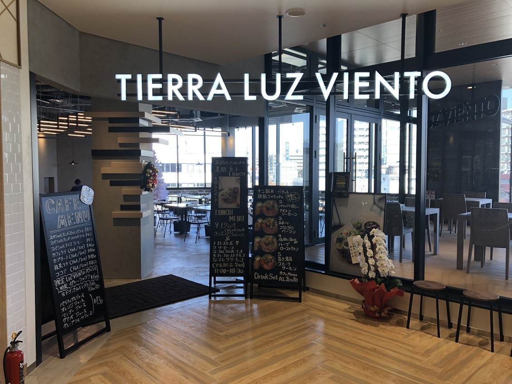
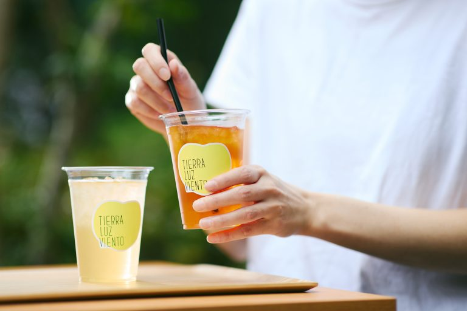
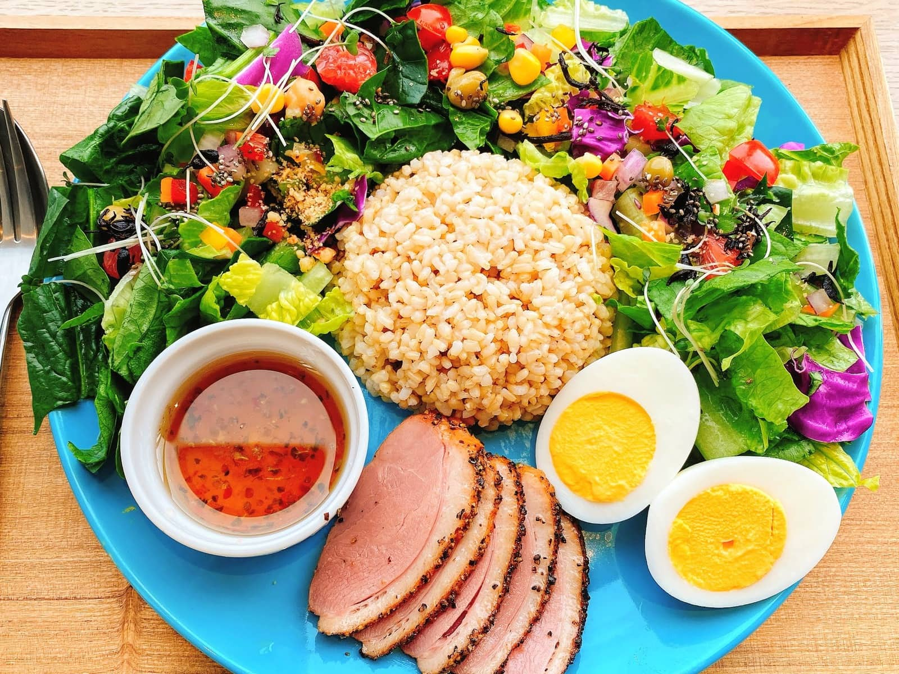
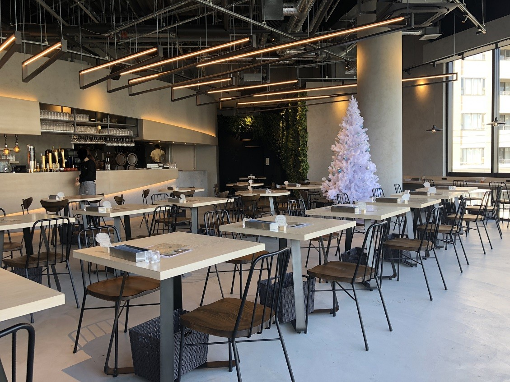

TIERRA LUZ BIENTO
2023年もスタートし、TIERRA LUZ BIENTOスタッフ一同、皆様に最高のひと時を提供できるよう
全力で頑張っていきたいと思っています！今年もよろしくお願いいたします！

季節ごとのイメージを大切にし、季節に応じたドリンクを提供しています。こだわりを大切にしお客様に幅広く楽しんでいただけるように様々な種類のものを用意しております。

スーパーフードや野菜が盛りだくさんのった完全食ワンプレート。スーパーフードである玄米を含め、サラダが主食のこのプレートは選べるサブディッシュが全部で７種類。また、サラダ油を使用せず、グレープフルーツオイルやエキストラバージンオリーブオイルで作られた自家製ドレッシングも10種類から選べます

店内は過ごしやすさを重視し、椅子や机の配置にこだわっております。また、時間ごとに照明を変化させ、ミーティングや作業がしやすいように徹底しております。